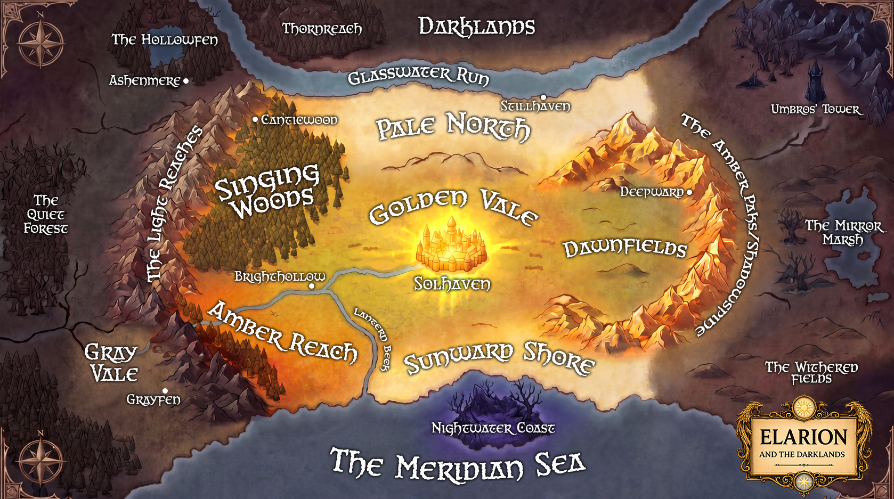

Explore the World
Hover over the cities and lands of Elarion to discover their stories. Explore the characters, dragons, and icons of the Ever Song Chronicles.

In the beginning, there was the Creator. And the Creator sang.
Not with words or instruments — but with something older and deeper than either. A Song that carried everything the Creator is: light, warmth, and love so complete that nothing could stand near it and remain empty. Everything that was made was made in tune with that Song.
The Ever Song is always present and never moving — not a force that travels, but a conduit to the Creator himself. It cannot be exhausted, diminished, or destroyed. It can only be ignored. And in Elarion, ignoring the Song is how the darkness has always done its work — not with force, but by pulling voices sideways, one note at a time, until the melody feels like a distant memory.
The Lightkeepers are those who have learned to hear the Song when others have forgotten how — and who carry that awareness into the dark places, one lantern, one road, one town at a time.
The Ever Song never stops.
People just stop hearing it.
The darkness is loud.
But the Song is older.
Staying in tune is not passive. It is the most active choice a person can make.